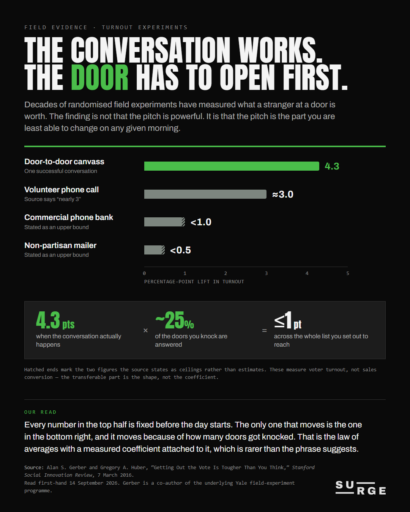
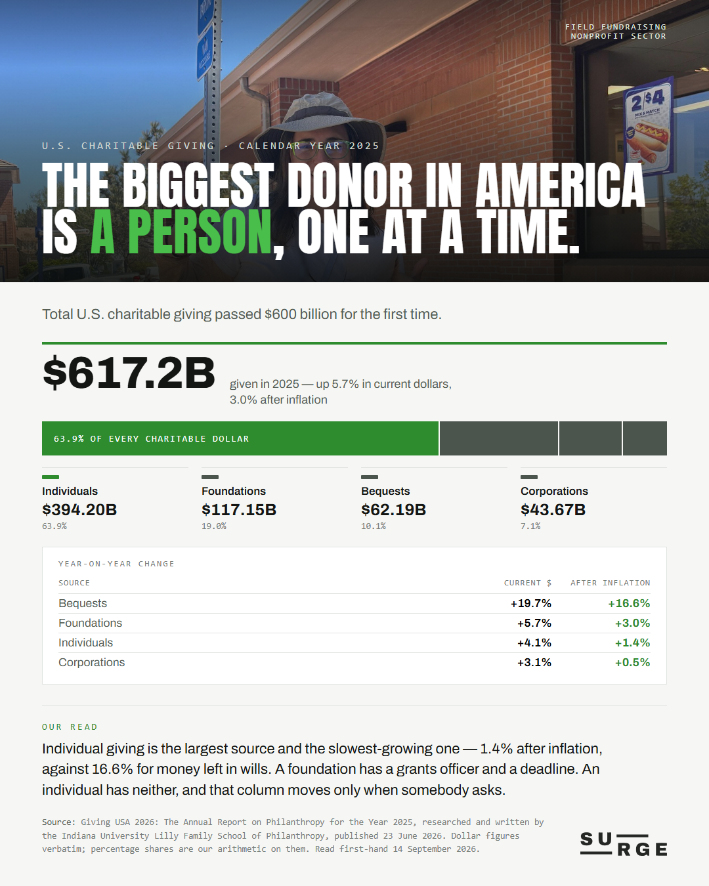
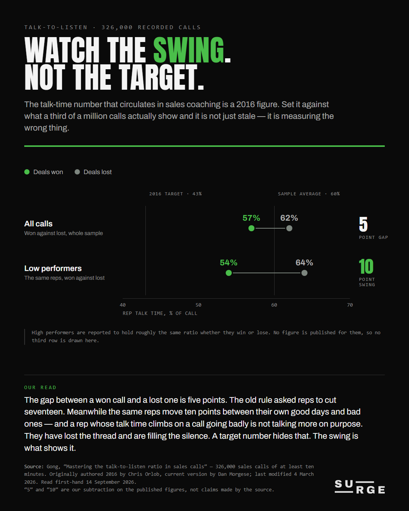
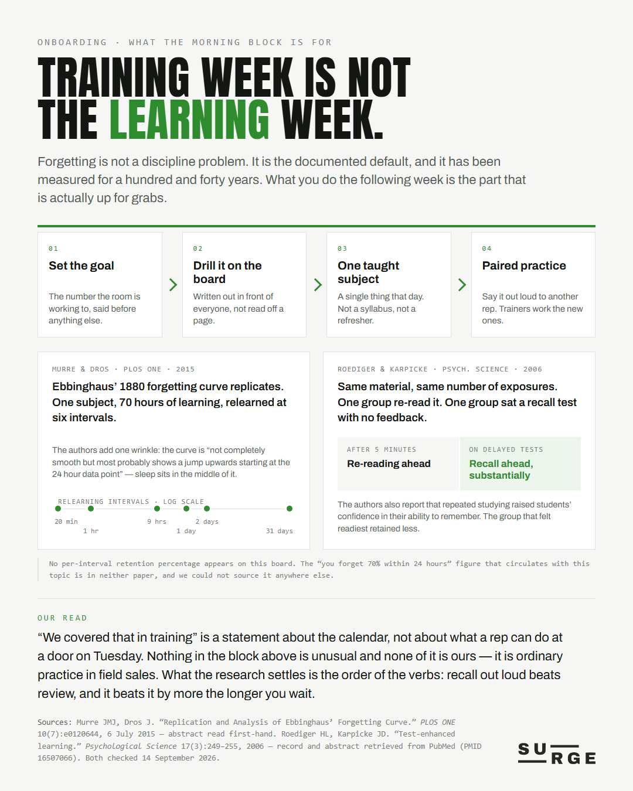

Social content · 14 September 2026
Draft only. Nothing here has been published, posted, scheduled or staged to any platform, and no account state was touched. Each PDF is one borderless page at 1080×1350 (4:5) — the LinkedIn and Instagram portrait frame. Click a board to open the PDF.

PIECE 01
Four outreach channels measured by randomised field experiment, then the arithmetic that actually decides the campaign: 4.3 points per conversation, a quarter of doors answered, a point or less across the list. The law of averages with a coefficient attached.

PIECE 02
US giving passed $600bn for the first time. Individuals are 63.9% of it and close to the slowest-growing share; the fastest-growing is money left in wills. A foundation has a grants officer. An individual has somebody who asked.

PIECE 03
Five points separate a won call from a lost one; the quoted target asks reps to cut seventeen. Meanwhile low performers move ten points between their own good days and bad ones — which is the number a target hides.

PIECE 04
The morning development block, described by its content and never its clock, set against the two papers that explain why it is shaped that way. Recall out loud beats review — and it beats it by more the longer you wait.